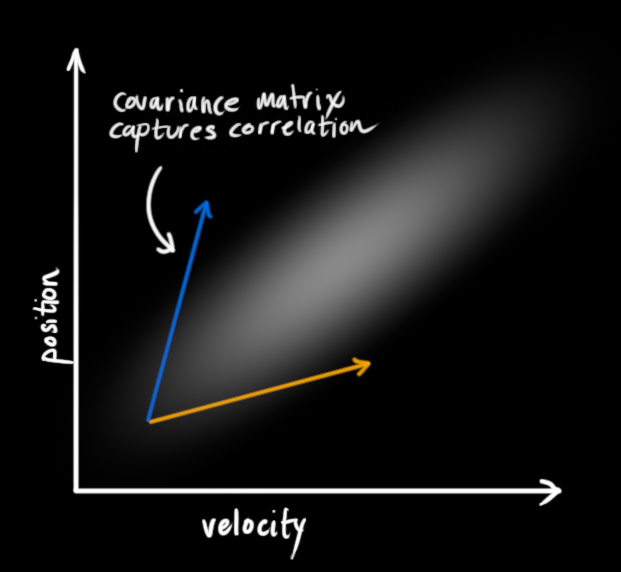

--
卡尔曼滤波器 -- Kalman Filter
参考 1
在车辆目标追踪时（vehicle tracking），我们往往要用到卡尔曼滤波器。
在 object tracking 的过程中，两个步骤反复出现：
1. 目标移动了，他的状态会随之发生变化，这个状态指的是它的位置、速度等等。
2. 测量目标，我们得到了和状态有关的一些信息，比如每隔一定时间我们获取 GPS 定位等等。
每一次，目标状态改变了，我们掌握的对目标的状态的不确定性增加了一点。
每一次，我们得到测量的数据，那么对于目标状态的不确定性消除了一点。
卡尔曼滤波器能够帮助你通过这两个过程对目标的状态进行预测。
预测 prediction
假设我们有个移动的小车，它的状态包含了它的当前运动的速度以及位置，我们时不时通过 GPU 去定位这个小车的位置，但是 GPU 有一定的误差，大概在几米的范围。而且 GPS 只能测量位置，不能测量速度（至少不能直接测量速度）。
x_k = [p_k, v_k],
# p is the position and v is the velocity
# k means the time point k


一开始假设小车处于状态 x0, 对于 位置p 和速度 v， 存在分布 mu_p0, sigma_p0 以及 mu_v0, sigma_v0。
这里 mu 和 sigma 都是正态分布的参数，均值和方差。
在这个图中，我们认为 位置和速度是独立无关的。他们的正态分布是互相独立的。
但是有时候，速度和位置是有关系的，
比如我们从原点起步，再间隔一定时间后，我们观测到了新的位置，如果位置更远，往往速度更快。如果位置更近，往往速度更慢。 如下图所示。

这个时候位置和速度的分布就不是互相独立的，而是相关的。
我们用一个协方差矩阵来描述这种概率上的分布。
这也是 multi-variable gaussian distribution 的表述。
在经过一定的时间 dt 之后，我们得到一个新的状态。
这里从 [p_k1, v_k1] 到 [p_k2, v_k2] 的状态转换，可以用下面的公式来表示，
p_k2 = p_k1 + Δt * v_k1
v_k2 = v_k1
或者换成矩阵描述，
[[p_k2,] , [[1, dt], [[p_k1],]
[v_k2]] = [0, 1]] * [v_k1] ]
我们定义这个转换矩阵为 F_k

如果在 k1 时刻的协方差矩阵为 P，根据下面的公式，可知 k2 时刻的协方差矩阵为 F_k * P_k * F_k.T

这里数学上的证明比较麻烦，作为卡尔曼滤波器的使用者，我们暂时只要记住结论即可
接下来我们考虑更加复杂的。如果外界对物体的移动有一定的作用，又该如何？
比方说，小车可能在加速或者减速，有一个加速度 a
那么公式就要变为：

这里 B 定义为控制矩阵，当然这个控制过程也会带来误差，比如说加速度 a，就可能处于一个高斯分布，
a 会带来新的不确定性，导致最终的不确定性增加

这里 Q 是 control 带来的不确定性 variance
测量 measurement
每一次对状态的测量能够让我们获得更多的信息，哪怕这个测量存在一定的误差或者variance
一般的，我们测量的数据并不一定就是全部的状态，比如状态有 位置和速度，而我们只能测量位置（或者速度， 或者其他的奇奇怪怪的东西），但是测量的数据可以通过从状态得到。

我们用一个矩阵 H 表示从状态中得到的测量数值的期望，同时，也能得到测量的误差。
但是测量本身是带有误差的，比如 GPS 的精度是若干米。

那么现在的问题变成了，我们发现新的状态有了两种分布，一种是我们预测得到的，一种是我们测量得到的。
可以认为这两种分布是独立的，也就是说，我测量的精度和预测的状态以及精度没有啥关系。
我们可以重新计算出一个状态分布，根据最大似然估计，把两者在每一个状态的概率相乘，然后做归一化。

以一维的state 为例，如果独立的到了两个分布，


在多维的 state 上，公式就变成为了：

以上，我们把所有的公式何在一起，得到了：